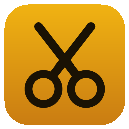

CortesPolítica de privacidade
Última atualização: 19 de novembro de 2026
Resumo
O Cortes roda inteiramente no computador do usuário. Não temos servidor, não coletamos, não vendemos e não compartilhamos dados de ninguém.
Quais dados o programa usa
- Dados da conta do TikTok: depois que você autoriza pelo login oficial do TikTok, o programa recebe um token de acesso e o identificador da sua conta (open ID). Eles ficam guardados apenas no seu computador e servem somente para enviar os seus clipes como rascunho para a sua própria conta.
- Permissões pedidas ao TikTok: apenas as necessárias para identificar a sua conta (
user.info.basic) e enviar vídeos como rascunho (video.upload). O programa não lê suas mensagens, seguidores, curtidas nem outros vídeos. - Vídeos e textos: os vídeos, clipes, títulos e hashtags ficam em pastas do seu computador. Um clipe só sai do computador quando é enviado para a sua conta do TikTok.
Com quem os dados são compartilhados
Com ninguém além do próprio TikTok, e somente no envio dos rascunhos que você autorizou.
Como apagar
Você pode retirar o acesso a qualquer momento no TikTok (Configurações → Segurança → Gerenciar permissões de apps) e apagar todos os dados apagando a pasta do programa no seu computador.
Contato
Privacy Policy
Last updated: November 19, 2026
Summary
Cortes runs entirely on the user's own computer. We have no server, and we do not collect, sell or share anyone's data.
Data the program uses
- TikTok account data: after you authorize through TikTok's official login, the program receives an access token and your account identifier (open ID). They are stored only on your computer and are used only to send your clips as drafts to your own account.
- Scopes requested from TikTok: only what is needed to identify your account (
user.info.basic) and upload videos as drafts (video.upload). The program does not read your messages, followers, likes or other videos. - Videos and text: videos, clips, titles and hashtags are kept in folders on your computer. A clip only leaves the computer when it is uploaded to your TikTok account.
Sharing
With no one other than TikTok itself, and only when uploading the drafts you authorized.
Deleting your data
You can revoke access at any time in TikTok (Settings → Security → Manage app permissions) and delete all data by deleting the program's folder on your computer.